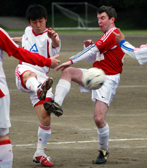

|
OiFuto dirt, Sunday 30th March,
Good day for a game, unfortunately it finished poorly as there were more missed chances than anything else. The Swiss should probably have held out for a 1-0 win but a remarkable substitution of a brand new player who had not touched a ball in two years, combined with that player’s beautiful pass to the opposition in the final third, allowed the BEFC to knock it past a stranded Peter for the tying goal.
Around the two goals, there was lots of puffing and howling at the ref, seemingly mandatory when skill on the pitch is severely lacking. The BEFC were definitely the winners of the effort award on the day – the midfield was tracking back consistently, always getting 8 men behind the ball, and clearances were generally won up front by their big man and eventual scorer.
The Swiss tried passing it around but new players in midfield did not justify their selection nager and the forwards were left well marked up front with no one willing to overlap from midfield. It was frustrating moving forward when the BEFC was constantly watching out for the Swiss big striker – he would occasionally drop into midfield to pick up the ball but there was no support, no one looking to push through a stubborn defense.
The Swiss looked like a well oiled Japanese side, one that could pass it around for days but never likely to get a shot off. Fortunately for the Swiss, a free kick was awarded 15 minutes into the second half when Yan was fouled just outside the penalty box. This allowed Kirk a clear site at goal and the free kick was placed in the upper right hand corner for a 1-0 lead. The rest of the half, the BEFC worked tirelessly to get the goal back and their big men up front were always running down long balls and occasionally getting off shots but few hit the target until the Swiss gifted it away.
The last 15 minutes saw some more purposeful running from the Swiss midfielders and Raffa out of defense – Suzuki did some good work to get into the box but the wall of defenders made it tough. In the end, funny lineups, new players, lack of quality mean another ignominious result for the Swiss as their league performance continue to whither. A point is just that, 1 point, when 3 would have helped. 5 games left against the Hibs, BFC, Geckoes, Sala, and YCAC – if we don’t win games like today’s, the rest of the season will be a joy.
Report by Cap'n Kirk
|